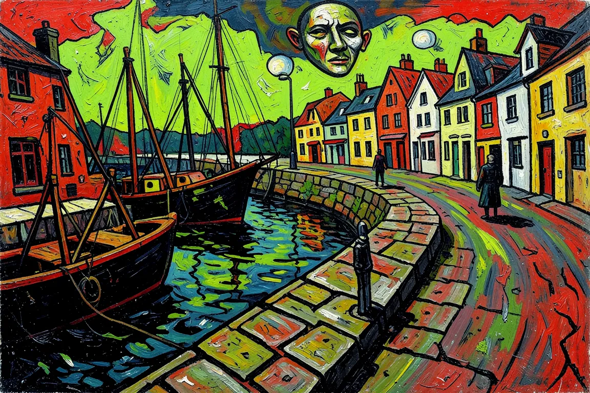

maleri · 1905–1925 · også: Die Brücke, Der Blaue Reiter, Tysk ekspresjonisme
Bilder som bøyer verden for å vise en indre tilstand: grell farge, hakkete linje, skrånende rom og maskeaktige ansikter. Byen er en trussel og kroppen er en nerve.

Kjerneidé
Et bilde viser hva maleren føler, ikke hva øyet ser, slik at form og farge forvrenges til de bærer følelsen.
Designprinsipper
Forvreng figuren og rommet: en lang hals, en skarp vinkel, et gulv som heller 10° til 25°.
Velg farge for stemningen: et grønt ansikt, en rød gate, en gul himmel, i full eller nesten full kromatisitet.
Tegn med en hard, mørk, kantet linje på 4 til 12 mm og la konturen brekke og skjære.
Flat ut dybden til 1 til 2 lag og skyv figurene mot fremkanten.
Mal raskt og røft: brede strøk på 20 til 50 mm, med penselsporene og skrapene synlige.
Vis byen, natten, mengden, nakenfiguren og portrettet med et spent eller tomt blikk.
Forenkle ansiktet til en maske med store øyne og en hard munn.